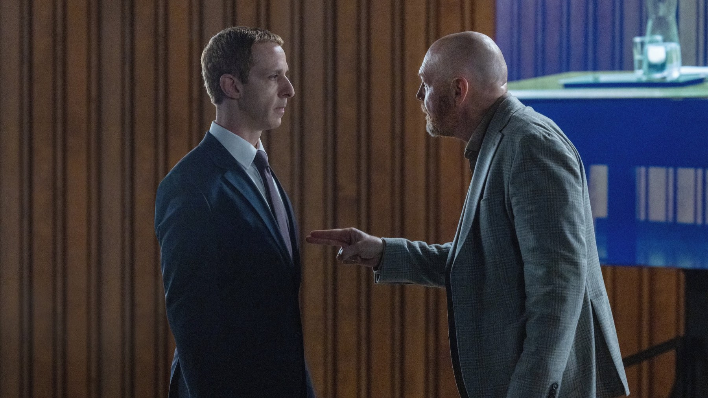

The Social Reckoning: 6 cose da sapere
Aaron Sorkin torna a Facebook sedici anni dopo The Social Network, ma stavolta dirige: dal titolo cambiato alla storia vera di Frances Haugen, tutto ciò che conta prima della sala
Nel 2010 Aaron Sorkin scrisse The Social Network, il film che raccontava la nascita di Facebook. Sedici anni dopo torna sullo stesso terreno, ma cambia ruolo e cambia bersaglio. Non racconta più la nascita di Facebook, racconta il momento in cui qualcuno decide di mostrarne gli ingranaggi al mondo. The Social Reckoning esce l'8 ottobre nelle sale italiane. Non lo abbiamo ancora visto e non fingiamo di averlo fatto: questa è la guida a ciò che si può sapere con certezza prima di entrare in sala, con le fonti dichiarate in fondo.
Che cosa racconta e su quale storia vera si basa?
Il film parte dal caso dei Facebook Files. Frances Haugen, product manager entrata in Facebook nel 2019 nel gruppo che si occupava di integrità civica, porta fuori decine di migliaia di documenti interni e li fa arrivare alla Securities and Exchange Commission e ai giornali. Da settembre 2021 il Wall Street Journal pubblica l'inchiesta Facebook Files, firmata dal giornalista Jeff Horwitz. Il 3 ottobre 2021 Haugen rivela la propria identità in un'intervista al programma 60 Minutes; due giorni dopo testimonia davanti alla commissione Commercio del Senato americano. La sinossi di MYmovies mette al centro proprio la collaborazione tra la giovane ingegnera, interpretata da Mikey Madison, e il giornalista, interpretato da Jeremy Allen White: un'indagine rischiosa nata da quei documenti.

Perché il titolo è cambiato?
Il progetto, annunciato nel giugno 2025, era noto all'inizio come The Social Network Part II. Sempre secondo Wikipedia, il titolo definitivo è arrivato nel settembre 2025, e durante le riprese circolava anche un titolo di lavorazione, Goliath. Il cambio non è un dettaglio: dice che la produzione ha scelto di presentarsi come film a sé, non come continuazione diretta. Anche in Italia il titolo prende una strada propria, The Social – Il prezzo della verità.
Chi interpreta Zuckerberg, e chi è rimasto dietro la macchina da presa?
Jesse Eisenberg, che nel 2010 aveva dato il volto a Mark Zuckerberg, non torna: la parte va a Jeremy Strong. Tra i protagonisti ci sono anche Betty Gilpin, Bill Burr, Wunmi Mosaku e Billy Magnussen. Dietro la macchina da presa la continuità invece c'è: Jeff Cronenweth, direttore della fotografia di The Social Network, firma anche questo film, mentre la colonna sonora è di Alexandre Desplat. A cambiare è la musica: nel 2010 le note di Trent Reznor e Atticus Ross avevano vinto l'Oscar per la miglior colonna sonora.
Come cambia il ruolo di Sorkin?
In The Social Network la regia era di David Fincher e Sorkin era lo sceneggiatore: per quel copione vinse l'Oscar alla miglior sceneggiatura non originale alla cerimonia del 2011, tratto dal libro di Ben Mezrich The Accidental Billionaires. Qui scrive e dirige. È un passaggio che pesa, perché il film del 2010 doveva molto al montaggio e allo sguardo gelido di Fincher; stavolta saranno la parola e il ritmo di Sorkin a reggere anche l'immagine. Ai tempi del primo film lo stesso Sorkin disse di non voler essere fedele alla verità, ma alla narrazione: una frase che vale la pena ricordare entrando in sala, perché ci ricorda di distinguere ciò che è documentato da ciò che è drammatizzato.
Quando e dove è stato girato, e quando esce?
Le riprese principali si sono svolte a Vancouver dal 22 ottobre al 9 dicembre 2025. Il film è stato presentato in anteprima nel Regno Unito il 29 settembre 2026 al Curzon Mayfair di Londra, esce in Italia l'8 ottobre con Eagle Pictures e negli Stati Uniti il 9 ottobre, distribuito da Sony Pictures Releasing e Columbia Pictures. Sulla durata le fonti non coincidono (Wikipedia indica 112 minuti, TMDB 120), perciò non la citiamo.
Come lo guarderemo, e che cosa aspettarci?
Per ora non c'è un giudizio critico che possiamo citare con una testata e un autore: le recensioni arriveranno con l'uscita e le leggeremo prima di scrivere la nostra. Quello che si può dire adesso è che il film mette insieme tre elementi che di solito funzionano: un caso reale con conseguenze ancora aperte, un autore che sa trasformare la discussione in azione e un cast che mette in fila Jeremy Strong, Mikey Madison e Jeremy Allen White. Quanto Sorkin riesca a restare sulla distanza giusta tra la cronaca e il racconto lo scopriremo in sala. Voi andate subito o aspettate le recensioni?
Domande frequenti
Quando esce in Italia The Social Reckoning?
L'8 ottobre 2026 al cinema, con il titolo italiano The Social – Il prezzo della verità, distribuito da Eagle Pictures secondo MYmovies. Negli Stati Uniti arriva il 9 ottobre 2026.
Bisogna aver visto The Social Network per capirlo?
No: Wikipedia lo definisce un seguito autonomo del film del 2010. Il racconto si concentra sul caso Facebook Files del 2021, quindi la storia si segue anche senza aver visto il primo film.
È tratto da una storia vera?
Sì. Si basa sulla fuga di documenti interni di Facebook del 2021, legata alla whistleblower Frances Haugen, e sull'inchiesta Facebook Files firmata da Jeff Horwitz per il Wall Street Journal.